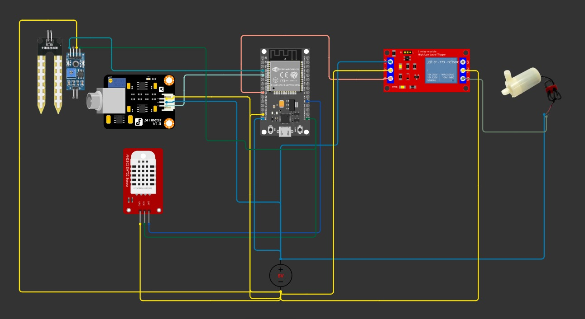

Hardware Utilizado
O ecossistema físico do vaso inteligente está sendo implementado de forma modular. Abaixo detalhamos o hardware ativo na fase atual e o escopo planejado:
- Fase Atual (ESP32-WROOM): Microcontrolador principal ativo no momento. Responsável por ler os sensores ambientais (DHT22 e YL-69). Atualmente, a irrigação é validada utilizando um relé/servomotor para fins de teste. O dispositivo gerencia a comunicação via MQTT com a nuvem.
- Planejado para o Futuro (ESP32-S3 e Periféricos): Um segundo microcontrolador será adicionado para lidar exclusivamente com a interação do usuário. Ele controlará a captura de áudio (microfone INMP441), a reprodução de voz e um Display OLED (SSD1306) para exibir as emoções da planta. O sensor de pH e a bomba d'água definitiva também serão integrados nesta etapa.
Contratos MQTT (QoS 1)
Tópico de Leituras: greensync/{deviceId}/sensores
{
"ph": 6.4,
"umidade_solo": 42,
"temperatura_ar": 24.1,
"umidade_ar": 58,
"bomba_ligada": false,
"timestamp": 1735000000
}
Nota: umidade_ar e timestamp são opcionais. umidade_solo já vem em % (calibrado). Se o DHT22 falhar, o firmware não publica.
Tópico de Status: greensync/{deviceId}/status
{"status": "online"} // ou offline via Last WillCircuito Eletrónico
Diagrama de ligações focado na leitura de dados vitais da planta e no controlo automático de irrigação.

Nota técnica: Esta primeira versão do circuito contempla a infraestrutura de hardware principal descrita na Fase V1 do projeto. O sistema utiliza um ESP32-WROOM para processar os dados do sensor de temperatura/humidade (DHT22), humidade do solo (YL-69) e sensor de pH. A atuação da bomba de água é gerida através de um módulo de relé, com os componentes de maior consumo elétrico suportados por uma fonte de alimentação externa de 5V. A integração do hardware de voz (ESP32-S3) será feita em fases posteriores.